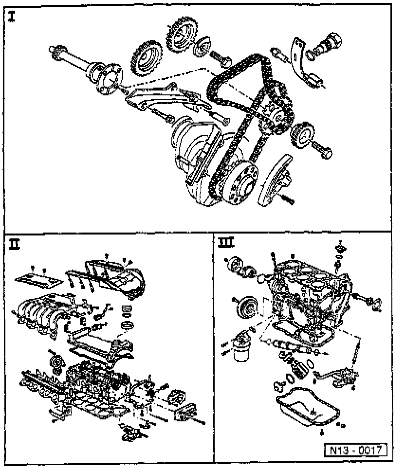

Section Breakdown Information

The cylinder block is replaced in three disassembly and assembly sections:
^ Section I, timing and drive belt components. Section I - Timing and Drive Belt
^ Section II, cylinder head components. Section II - Cylinder Head
^ Section III, cylinder block components. Section III - Cylinder Block
NOTE:
- If during repair work, metal shavings or quantities of small metal particles are found in the engine oil - caused, for example, by Partial) seizure of the crankshaft and connecting rod bearings - then, in addition to thoroughly cleaning out the oil passages, replace the oil cooler.
- Faulty injectors can cause violent knocking noises in the engine which sound like damaged bearings. When this occurs idle engine and loosen the injector line connections one after the other. If the knocking stops when a connection is loosened, it indicates that the respective injector is faulty.